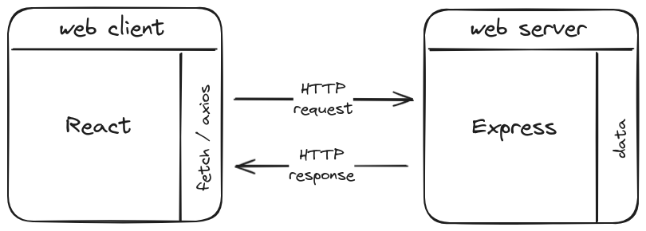

07 - JS Monorepo : Mettre en place un CRUD / BREAD 🍞
Objectifs
- Apprendre les conventions et bonnes pratiques REST
- Mettre en place un CRUD / BREAD complet
- Communiquer avec une application serveur depuis une application cliente
- Étudier et utiliser un code existant
Pré-requis
- 1
- 2
Identifier les informations principales d'une requête HTTP
Exemple de requête HTTP :
POST /categories Host: foo.com Content-Type: application/json Content-Length: 23 { "title": "Aventure" }Les informations principales :
Méthode HTTP Chemin d'URL Corps de la requête POST /categories { "title": "Aventure" } - 3
Identifier les informations principales d'une réponse HTTP
Exemple de réponse HTTP :
HTTP/1.1 201 Created ETag: W/"xyzzy" Content-Type: application/json Content-Length: 11 Cache-Control: no-cache { "id": 3 }Les informations principales :
Statut de la réponse Corps de la réponse 201 Created { "id": 3 }
Sommaire
Introduction
Dans les quêtes précédentes, tu as mis en place une application serveur, et appris à communiquer avec une base de données.
Dans cette quête, tu vas mettre en place un CRUD (Create, Read, Update, Delete) complet, aussi appelé BREAD (Browse, Read, Edit, Add, Destroy), pour gérer les données de ton application. Tu vas également apprendre à communiquer avec une application serveur depuis une application cliente en suivant les principes REST.
Qu'est-ce que REST ?
REST (REpresentational State Transfer) est une architecture qui repose sur un ensemble de contraintes pour construire des services web. Les services RESTful utilisent les protocoles HTTP pour effectuer des opérations sur les ressources d'un serveur web.
Les bonnes pratiques REST :
- Utiliser des noms de ressources : Les URL doivent représenter des ressources. Par exemple, pour une ressource de type "article", l'URL pourrait être
/articlespour l'ensemble des articles et/articles/:idpour un article spécifique. - Utiliser les méthodes HTTP de manière appropriée : GET pour récupérer des ressources, POST pour créer des ressources, PUT pour mettre à jour des ressources, et DELETE pour supprimer des ressources.
- Statuts de réponse HTTP : Utiliser les codes de statut HTTP pour indiquer le résultat des opérations (200 pour OK, 201 pour Created, 204 pour No Content, etc.).
- Utiliser des formats standardisés : JSON est couramment utilisé pour représenter les données des requêtes et des réponses.
Les opérations CRUD / BREAD
Les opérations CRUD (Create, Read, Update, Delete) correspondent aux actions de base que tu peux effectuer sur les données d'une application. Dans le cadre de cette quête, nous allons étendre ce concept avec BREAD (Browse, Read, Edit, Add, Destroy), qui est une version plus parlante des mêmes opérations.
C'est un moyen mnémotechnique de retenir les opérations les plus courantes : une "checklist" à vérifier pour chaque ressource. Chaque ressource est identifiée par une URL et les opérations sur ces ressources sont effectuées en utilisant les méthodes HTTP.
Table de correspondance entre BREAD et HTTP (et SQL)
Pour une ressource "item" :
| Nom de l'opération | Méthode HTTP | Chemin d'URL | Corps de la requête | Opération SQL | Statut de la réponse | Corps de la réponse |
|---|---|---|---|---|---|---|
| Browse | GET | /items | (rien) | SELECT | 200 OK | Liste des ressources |
| Read | GET | /items/:id | (rien) | SELECT | 200 OK | Détails de la ressource |
| Add (Create) | POST | /items | Données de la nouvelle ressource | INSERT | 201 Created | Id d'insertion * |
| Edit (Update) | PUT | /items/:id | Données mises à jour | UPDATE | 204 No Content | (rien) |
| Destroy (Delete) | DELETE | /items/:id | (rien) | DELETE | 204 No Content | (rien) |
* La recommandation pour la création de ressources est de ne rien retourner dans le corps de la réponse, et d'utiliser un header "Location". Cette pratique amène une complexité supplémentaire. Retourner l'id d'insertion dans le corps de la réponse est une alternative que tu utiliseras pendant ta formation.
Ces détails sont repris sur la page Using HTTP Methods for RESTful Services.
Pour aller plus loin sur REST, tu peux aussi consulter le site https://restfulapi.net/.
Avant d'aller plus loin
Comment utiliser cette quête ?
Tu vas récupérer un dépôt avec un CRUD / BREAD complet (serveur et client) sur les catégories :
- Lister les catégories (Browse)
- Voir les détails d'une catégorie (Read)
- Modifier une catégorie (Edit)
- Créer une nouvelle catégorie (Add)
- Supprimer une catégorie (Destroy)
Tu peux suivre cette quête pour construire pas à pas chaque fonctionnalité en t'appuyant sur le code du dépôt fourni en exemple.
Si tu préfères expérimenter de ton côté ou explorer le code du dépôt fourni en autonomie, tu peux prendre comme référence la Table de correspondance entre BREAD et HTTP (et SQL) pour implémenter ton propre BREAD des catégories.
Attention : une étape indispensable pour faire communiquer ton client et ton serveur est d'activer le parsing du JSON dans la requête. Si tu ne suis pas toutes les étapes de la quête, lis attentivement les commentaires dans server/src/app.ts pour avoir des indications sur ce que tu dois faire.
Le dépôt fourni pour cette quête
Pour cette quête, un dépôt de démonstration est disponible : il contient une application serveur prête à l'emploi. Ce dépôt contient également le code client qui interagira avec le serveur. Pour le cloner, ouvre un terminal puis exécute la commande :
git clone git@github.com:WildCodeSchool/quest-js-wild-series.git
Installe ensuite les dépendances du projet :
cd quest-js-wild-series
npm install
Créé les fichiers server/.env et client/.env en copiant et en adaptant server/.env.sample et client/.env.sample. Mets en place la base de données en exécutant la commande :
npm run db:migrate
Tu peux maintenant démarrer les applications avec la commande npm run dev et tester l'application client en ouvrant la page http://localhost:3000.
B, R, E, A, D
Chacune des parties suivantes détaille l'implémentation d'une méthode. Le schéma est toujours le même :
- Côté client :
- Fetch : l'appel qui envoie une requête au serveur
- Côté serveur :
- Action : l'action déclenchée côté serveur.
- Repository : la méthode utilisée pour appliquer l'action dans la base de données.
Plusieurs des requêtes HTTP dans ce dépôt utilisent des options avancées de fetch. Par exemple, une requête PUT ressemble à ceci :
const category = { id: 1, name: "Comédie musicale" };
fetch(`${import.meta.env.VITE_API_URL}/api/categories/${someId}`, {
method: "put",
headers: { "Content-Type": "application/json" },
body: JSON.stringify(category),
});
Décryptage :
import.meta.env.VITE_API_URL: c'est l'URL de base de ton serveur, indiquée dansclient/.env. Elle est suivie du chemin d'URL à requêter :/api/categories/${someId}.method: "put": le verbe HTTP qui complète la requête, ici PUT.headers: { "Content-Type": "application/json" }: les en-têtes de la requête, ici pour préciser que le type du contenu, le corps (body) contient des données au format JSON.body: JSON.stringify(category): le corps de la requête, qui doit impérativement être une chaine de caractères (au format JSON, puisque c'est le format que nous avons fixé).
L'opération Add inclue des détails supplémentaires sur l'activation du parsing du JSON dans server/src/app.ts : tu devrais commencer par cette opération. Libre à toi ensuite de piocher l'opération BREAD que tu veux dérouler.
Browse
| Nom de l'opération | Méthode HTTP | Chemin d'URL | Corps de la requête | Opération SQL | Statut de la réponse | Corps de la réponse |
|---|---|---|---|---|---|---|
| Browse | GET | /categories | (rien) | SELECT | 200 OK | Liste des catégories |
- 1
Fetch
Dans
client/src/pages/CategoryIndex.tsx:typescriptimport { useEffect, useState } from "react"; import { Link } from "react-router-dom"; type Category = { id: number; name: string; }; function CategoryIndex() { const [categories, setCategories] = useState([] as Category[]); useEffect(() => { fetch(`${import.meta.env.VITE_API_URL}/api/categories`) .then((response) => response.json()) .then((data: Category[]) => { setCategories(data); }); }, []); return ( <> <Link to={"/categories/new"}>Ajouter</Link> <ul> {categories.map((category) => ( <li key={category.id}> <Link to={`/categories/${category.id}`}>{category.name}</Link> </li> ))} </ul> </> ); } export default CategoryIndex; - 2
Requête envoyée, en attente d'une réponse

- 3
Action
Dans
server/src/modules/category/categoryActions.ts:typescriptconst browse: RequestHandler = async (req, res, next) => { try { // Fetch all categories const categories = await categoryRepository.readAll(); // Respond with the categories in JSON format res.json(categories); } catch (err) { // Pass any errors to the error-handling middleware next(err); } }; - 4
Repository
Dans
server/src/modules/category/categoryRepository.ts:typescriptasync readAll() { // Execute the SQL SELECT query to retrieve all categories from the "category" table const [rows] = await databaseClient.query<Rows>("select * from category"); // Return the array of categories return rows as Category[]; }
Read
| Nom de l'opération | Méthode HTTP | Chemin d'URL | Corps de la requête | Opération SQL | Statut de la réponse | Corps de la réponse |
|---|---|---|---|---|---|---|
| Read | GET | /categories/:id | (rien) | SELECT | 200 OK | Détails de la catégorie |
- 1
Fetch
Dans
client/src/pages/CategoryDetails.tsx:typescriptimport { useEffect, useState } from "react"; import { Link, useParams } from "react-router-dom"; import CategoryDeleteForm from "../components/CategoryDeleteForm"; type Program = { id: number; title: string; }; type Category = { id: number; name: string; programs: Program[]; }; function CategoryDetails() { const { id } = useParams(); const [category, setCategory] = useState(null as null | Category); useEffect(() => { fetch(`${import.meta.env.VITE_API_URL}/api/categories/${id}`) .then((response) => response.json()) .then((data: Category) => { setCategory(data); }); }, [id]); return ( category && ( <> <hgroup className="details-hgroup"> <h1>{category.name}</h1> <Link to={`/categories/${category.id}/edit`}>Modifier</Link> <CategoryDeleteForm id={category.id}>Supprimer</CategoryDeleteForm> </hgroup> <ul> {category.programs.map((program) => ( <li key={program.id}> <Link to={`/programs/${program.id}`}>{program.title}</Link> </li> ))} </ul> </> ) ); } export default CategoryDetails; - 2
Requête envoyée, en attente d'une réponse
- 3
Action
Dans
server/src/modules/category/categoryActions.ts:typescriptconst read: RequestHandler = async (req, res, next) => { try { // Fetch a specific category based on the provided ID const categoryId = Number(req.params.id); const category = await categoryRepository.read(categoryId); // If the category is not found, respond with HTTP 404 (Not Found) // Otherwise, respond with the category in JSON format if (category == null) { res.sendStatus(404); } else { res.json(category); } } catch (err) { // Pass any errors to the error-handling middleware next(err); } }; - 4
Repository
Dans
server/src/modules/category/categoryRepository.ts:typescriptasync read(id: number) { // Execute the SQL SELECT query to retrieve a specific category by its ID const [rows] = await databaseClient.query<Rows>( ` select category.*, JSON_ARRAYAGG( JSON_OBJECT( "id", program.id, "title", program.title ) ) as programs from category left join program on program.category_id = category.id where category.id = ? group by category.id `, [id], ); // Return the first row of the result, which represents the category return rows[0] as Category; }ImportantQuelle est cette diablerie ?!? Qu'est devenu le
select * from category where id = ??Rassure-toi : tu auras rarement besoin d'une requête aussi complexe. Nous avons volontairement provoqué le cas pour que tu le rencontres pendant cette quête.
Sur la page détaillée d'une ressource, tu peux vouloir afficher des ressources associées par une clé étrangère. Ici par exemple, le code SQL permet de récupérer une catégorie avec toutes ses séries.
C'est le rôle d'une jointure SQL : récupérer des données à travers plusieurs tables avec une seule requête. Une première version serait (avec un
left join, pour récupérer toutes les catégories, même celles qui n'ont pas encore de séries associées) :sqlselect category.*, program.id as program_id, program.title from category left join program on program.category_id = category.id;Tous les champs de la table
categorysont sélectionnés aveccategory.*. L'id de la tableprogramest renommé avec l'aliasprogram_idpour éviter une collision de nom avec l'id de la tablecategory.Si une catégorie est associée à plusieurs séries, la requête produira un tableau "applati" avec les données de la catégorie duppliquées comme dans cet exemple :
json[ { "id": 1, "name": "Comédie", "program_id": 1, "title": "The Good Place" }, { "id": 1, "name": "Comédie", "program_id": 3, "title": "The office" }, { "id": 2, "name": "Science-Fiction", "program_id": 2, "title": "Dark" } ]Tu peux produire une version beaucoup mieux structurée pour ton client en regroupant les séries par catégories. Quelque chose comme ça :
json[ { "id": 1, "name": "Comédie", "programs": [ { "id": 1, "title": "The Good Place" }, { "id": 3, "title": "The office" } ] }, { "id": 2, "name": "Science-Fiction", "programs": [{ "id": 2, "title": "Dark" }] } ]C'est ce que te permet l'option
group byen SQL (la requête suivante ne marche pas) :sqlselect category.* program.id as program_id, program.title from category left join program on program.category_id = category.id group by category.idMais dans ce regroupement, tu obtiens plusieurs séries à "faire tenir sur la même ligne" pour chaque catégorie. C'est là que tu dois expliquer en SQL comment construire une agrégation. MySQL fournit des fonctions pour réunir plusieurs champs en un objet JSON puis plusieurs objets en un tableau : JSON_OBJECT et JSON_ARRAYAGG. Avec toutes les pièces du puzzle, tu obtiens :
sqlselect category.*, JSON_ARRAYAGG( JSON_OBJECT( "id", program.id, "title", program.title ) ) as programs from category left join program on program.category_id = category.id group by category.id
Edit
| Nom de l'opération | Méthode HTTP | Chemin d'URL | Corps de la requête | Opération SQL | Statut de la réponse | Corps de la réponse |
|---|---|---|---|---|---|---|
| Edit (Update) | PUT | /categories/:id | Données mises à jour | UPDATE | 204 No Content | (rien) |
- 1
Fetch
Dans
client/src/pages/CategoryEdit.tsx:typescriptimport { useEffect, useState } from "react"; import { useNavigate, useParams } from "react-router-dom"; import CategoryForm from "../components/CategoryForm"; type Category = { id: number; name: string; }; function CategoryEdit() { // ... return ( category && ( <CategoryForm defaultValue={category} onSubmit={(categoryData) => { fetch( `${import.meta.env.VITE_API_URL}/api/categories/${category.id}`, { method: "put", headers: { "Content-Type": "application/json", }, body: JSON.stringify(categoryData), }, ).then((response) => { if (response.status === 204) { navigate(`/categories/${category.id}`); } }); }} > Modifier </CategoryForm> ) ); } export default CategoryEdit; - 2
Requête envoyée, en attente d'une réponse
- 3
Activer le parsing de la requête
Le parsing des requêtes est nécessaire pour extraire les données envoyées par le client dans une requête HTTP. C'est le cas ici pour accéder au corps de ta requête PUT.
Dans
server/src/app.ts, le code contient des commentaires pour activer différentes manières d'extraire des données :express.json(): analyse les requêtes avec des données JSON.express.urlencoded(): analyse les requêtes avec des données codées en URL.express.text(): analyse les requêtes avec des données texte brutes.express.raw(): analyse les requêtes avec des données binaires brutes.
Si ce n'est pas déjà fait, décommente une ou plusieurs de ces options selon le format des données envoyées par ton client :
diff-// app.use(express.json()); +app.use(express.json()); // app.use(express.urlencoded()); // app.use(express.text()); // app.use(express.raw()); - 4
Action
Dans
server/src/modules/category/categoryActions.ts:typescriptconst edit: RequestHandler = async (req, res, next) => { try { // Update a specific category based on the provided ID const category = { id: Number(req.params.id), name: req.body.name, }; const affectedRows = await categoryRepository.update(category); // If the category is not found, respond with HTTP 404 (Not Found) // Otherwise, respond with the category in JSON format if (affectedRows === 0) { res.sendStatus(404); } else { res.sendStatus(204); } } catch (err) { // Pass any errors to the error-handling middleware next(err); } }; - 5
Repository
Dans
server/src/modules/category/categoryRepository.ts:typescriptasync update(category: Category) { // Execute the SQL UPDATE query to update an existing category in the "category" table const [result] = await databaseClient.query<Result>( "update category set name = ? where id = ?", [category.name, category.id], ); // Return how many rows were affected return result.affectedRows; }Note le
<Result>derrièredatabaseClient.query: il est en phase la requête UPDATE qui produit un résultat (dont le nombre de lignes affectées :result.affectedRows) et pas des "rows" comme une requête SELECT.
Add
| Nom de l'opération | Méthode HTTP | Chemin d'URL | Corps de la requête | Opération SQL | Statut de la réponse | Corps de la réponse |
|---|---|---|---|---|---|---|
| Add (Create) | POST | /categories | Données de la nouvelle catégorie | INSERT | 201 Created | Id d'insertion |
- 1
Fetch
Dans
client/src/pages/CategoryNew.tsx:typescriptimport { useNavigate } from "react-router-dom"; import CategoryForm from "../components/CategoryForm"; function CategoryNew() { const navigate = useNavigate(); const newCategory = { name: "", }; return ( <CategoryForm defaultValue={newCategory} onSubmit={(categoryData) => { fetch(`${import.meta.env.VITE_API_URL}/api/categories`, { method: "post", headers: { "Content-Type": "application/json", }, body: JSON.stringify(categoryData), }) .then((response) => response.json()) .then((data) => { navigate(`/categories/${data.insertId}`); }); }} > Ajouter </CategoryForm> ); } export default CategoryNew; - 2
Requête envoyée, en attente d'une réponse
- 3
Activer le parsing de la requête
Le parsing des requêtes est nécessaire pour extraire les données envoyées par le client dans une requête HTTP. C'est le cas ici pour accéder au corps de ta requête POST.
Dans
server/src/app.ts, le code contient des commentaires pour activer différentes manières d'extraire des données :express.json(): analyse les requêtes avec des données JSON.express.urlencoded(): analyse les requêtes avec des données codées en URL.express.text(): analyse les requêtes avec des données texte brutes.express.raw(): analyse les requêtes avec des données binaires brutes.
Si ce n'est pas déjà fait, décommente une ou plusieurs de ces options selon le format des données envoyées par ton client :
diff-// app.use(express.json()); +app.use(express.json()); // app.use(express.urlencoded()); // app.use(express.text()); // app.use(express.raw()); - 4
Action
Dans
server/src/modules/category/categoryActions.ts:typescriptconst add: RequestHandler = async (req, res, next) => { try { // Extract the category data from the request body const newCategory = { name: req.body.name, }; // Create the category const insertId = await categoryRepository.create(newCategory); // Respond with HTTP 201 (Created) and the ID of the newly inserted item res.status(201).json({ insertId }); } catch (err) { // Pass any errors to the error-handling middleware next(err); } }; - 5
Repository
Dans
server/src/modules/category/categoryRepository.ts:typescriptasync create(category: Omit<Category, "id">) { // Execute the SQL INSERT query to add a new category to the "category" table const [result] = await databaseClient.query<Result>( "insert into category (name) values (?)", [category.name], ); // Return the ID of the newly inserted item return result.insertId; }Note le
<Result>derrièredatabaseClient.query: il est en phase la requête UPDATE qui produit un résultat (dont l'id généré lors de l'insertion :result.insertId) et pas des "rows" comme une requête SELECT.
Destroy
| Nom de l'opération | Méthode HTTP | Chemin d'URL | Corps de la requête | Opération SQL | Statut de la réponse | Corps de la réponse |
|---|---|---|---|---|---|---|
| Destroy (Delete) | DELETE | /categories/:id | (rien) | DELETE | 204 No Content | (rien) |
- 1
Fetch
Dans
client/src/components/CategoryDeleteForm.tsx:typescriptimport type { ReactNode } from "react"; import { useNavigate } from "react-router-dom"; type CategoryDeleteFormProps = { id: number; children: ReactNode; }; function CategoryDeleteForm({ id, children }: CategoryDeleteFormProps) { const navigate = useNavigate(); return ( <form onSubmit={(event) => { event.preventDefault(); fetch(`${import.meta.env.VITE_API_URL}/api/categories/${id}`, { method: "delete", }).then((response) => { if (response.status === 204) { navigate("/categories"); } }); }} > <button type="submit">{children}</button> </form> ); } export default CategoryDeleteForm; - 2
Requête envoyée, en attente d'une réponse
- 3
Action
Dans
server/src/modules/category/categoryActions.ts:typescriptconst destroy: RequestHandler = async (req, res, next) => { try { // Delete a specific category based on the provided ID const categoryId = Number(req.params.id); await categoryRepository.delete(categoryId); // Respond with HTTP 204 (No Content) anyway res.sendStatus(204); } catch (err) { // Pass any errors to the error-handling middleware next(err); } }; - 4
Repository
Dans
server/src/modules/category/categoryRepository.ts:typescriptasync delete(id: number) { // Execute the SQL DELETE query to delete an existing category from the "category" table const [result] = await databaseClient.query<Result>( "delete from category where id = ?", [id], ); // Return how many rows were affected return result.affectedRows; }Note le
<Result>derrièredatabaseClient.query: il est en phase la requête UPDATE qui produit un résultat (dont le nombre de lignes affectées :result.affectedRows) et pas des "rows" comme une requête SELECT.
Récapitulatif
À ce stade, nous avons un CRUD / BREAD complet pour gérer les catégories de notre application. Tu as appris les conventions REST, activé le parsing de JSON, et vu l'implémentation de chaque opération avec une communication entre le client et le serveur.
Voici un récapitulatif des opérations effectuées :
- Browse : Récupérer et afficher la liste des ressources.
- Read : Lire et afficher les détails d'une ressource spécifique.
- Edit : Modifier une ressource existante.
- Add : Ajouter une nouvelle ressource.
- Destroy : Supprimer une ressource existante.
En t'appuyant sur les exemples fournis, tu devrais être capable de mettre en place un CRUD / BREAD fonctionnel pour gérer chaque ressource de ton application.
Challenge
Implémente les mêmes fonctionnalités BREAD pour une autre ressource de ton projet Wild Series : les programs. Assure-toi de bien suivre les conventions REST et d'appliquer les bonnes pratiques vues dans cette quête.